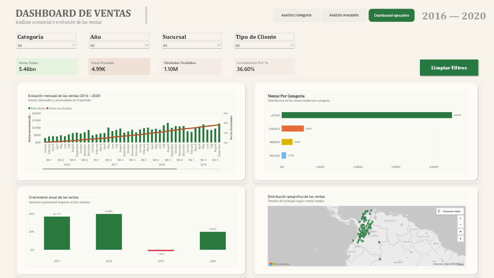
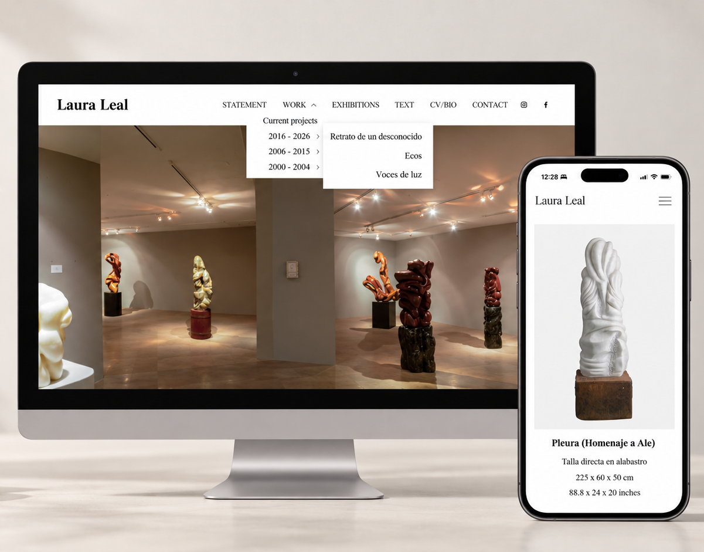

Dashboard / Business Intelligence
Análisis de ventas
Dashboard interactivo diseñado para analizar ventas, sucursales, categorías y tendencias de forma visual y dinámica.
Explorar proyectoAquí puedes conocer algunos de mis proyectos, las soluciones que he desarrollado y las tecnologías con las que trabajo.

Dashboard / Business Intelligence
Dashboard interactivo diseñado para analizar ventas, sucursales, categorías y tendencias de forma visual y dinámica.
Explorar proyecto
Sistema Web
Plataforma universitaria de nutrición y bienestar con contenido, herramientas y perfiles de visitantes y nutriólogos.
Explorar proyecto
Sitio Web
Reorganización de obras, imágenes y textos en un sitio existente de Squarespace, con ajustes de navegación, presentación y SEO.
Explorar proyectoSoy estudiante de Ingeniería en Software con interés en crear soluciones digitales funcionales, claras y fáciles de usar. Mi experiencia combina desarrollo web, bases de datos, análisis de datos, dashboards y mejora de procesos digitales.
Me interesa especialmente transformar necesidades reales en soluciones que puedan simplificar procesos, organizar información y facilitar la toma de decisiones.
Puedes explorar más proyectos, repositorios, prácticas y experimentos técnicos en mi GitHub.